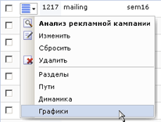

Эта форма отображает графики посещаемости и событий по данным, собираемых в рамках соответствующей рекламной кампании. Форма может быть открыта путём выбора пункта Графики меню действий списка рекламных кампаний:
или выбором ссылки Графики рекламной компании на вкладке Графики формы Анализ рекламной компании.
Фильтр
| Наименование параметра | Описание |
|---|---|
| Период | Период времени, за который требуется вывести график. |
| События | События, которые требуется вывести на графике событий.
Кнопка Добавить открывает окно со списком событий, в котором можно выбрать (установкой флажков и нажатием кнопки Выбрать) события для отображения. Кнопка Удалить исключает выбранные события из списка. |
| Показать все условия | Отражает все поля фильтра. |
| Скрыть все условия | Скрывает все поля фильтра, кроме полей по умолчанию. |
Для того чтобы отрисовать графики по заданным критериям, нажмите кнопку Найти. Для отображения всех данных без ограничений нажмите кнопку Отменить.
Контекстная панель
| Кнопка | Описание |
|---|---|
| Список рекламных кампаний | Нажатие этой кнопки открывает отчет со списком рекламных кампаний. |
| Динамика рекламной кампании | Открывает отчет по динамике (кол-во хитов, сессий и т.п.) текущей рекламной кампании. |
| Настроить | Позволяет перейти к диалогу настройки внешнего вида отчетной формы. |
| Excel | Экспортирует данные из отображаемой формы в формат MS Excel. |
Пример графика посещений в рамках рекламной кампании
Пример графика событий рекламной кампании

| © «Битрикс», 2001-2008, «1C-Битрикс», 2008 | 1С-Битрикс: Управление сайтом |